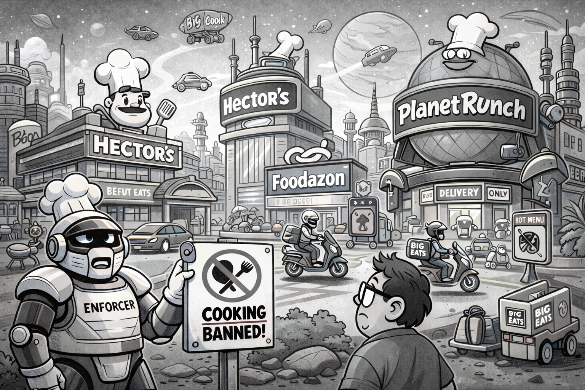

Some random thoughts¶
This is a collection of semi-random (but interconnected) topics and thoughts that might be amenable to contribute shaping up a public-engagement event on the general subject of ethical software.
The rise of the algorithm¶
In a world where the word algorithm is literally ubiquitous, and the very concept seems to be elevated to the status os a Hobbesian Leviathan that is controlling each single aspect of our lives, it might be worth reminding that there isn't really anything particularly hard to grasp in the thing.
Algorithm: a procedure for solving a mathematical problem (as of finding the greatest common divisor) in a finite number of steps that frequently involves repetition of an operation. (Source: Merriam-Webster)
This is it. Really. In fact the concept of algorithm is germane to that of a cooking recipe, in that the latter is basically explaining you step by step how to turn a whole bunch of seemingly unrelated ingredients into your favorite dish. (Well, I will give you that you cannot really push this analogy too far. For one thing recipes are for humans, and they are almost never as precise as you would expect an actual algorithm to be, as there is a lot of common context that comes into play when cooking. But bear with me for a moment, as the analogy is good enough to illustrate the point I am getting to.)
Planet Deliveria¶
Now imagine for a second living on a different planet in which cookbooks and online recipes do not exist. (To make things more dramatic we shall call this planet Deliveria.) Life on Deliveria proceeds pretty much like on the Earth, except that, when it comes to eating, all the production has been centralized in a small number of certified big companies that run physical restaurants and catering services. Sure enough, you can go eat in you favorite place or get food delivered home, but houses come without kitchens. You would't know what to do with one anyway, as all the recipes are kept secret in the hands of three or four "Big Cook" companies. And people are explicitly forbidden by the government from cooking for security reasons.

Generated by ChatGPT image generator 4o.
On a closer look, things are even worst. Whenever one of the Big Cook comes up with a new recipe, things are setup so that they can file for a patent and prevent any other company from cooking the same thing without explicit permission. (In practice the few Big Cook companies are pretty forgiving with each other, and the main practical implication of this setup is that the entry barrier for new companies is pretty high, but this is bringing us on a tangent, so let's leave it at that.)
I know, I know. If you are thinking that all of this is pretty silly, I am with you. You don't really see any of this happening, and neither do I. One of the main reasons why planet Deliveria is an unlikely setting is that cooking is relatively easy and recipes are not really hard to reverse-engineer (keep this expression in mind as we shall go back to it) and teach someone else. Even in situation in which the government was actively trying to perpetuate the status quo, it wouldn't probably take much time for a variegate black market to flourish. And yet I am sure everybody can see some scary resemblance with our fellow planet Earth, and maybe we can make things more realistic in a slightly different context.
Euclid¶
Roll back to c. 300 BC in Alexandria (Egypt), Euclid's elements describe what is believed to be the first algorithm historically documented in western literature that continues to be relevant to date: the Euclidean algorithm to find the greatest common divisor between two numbers.

Generated by ChatGPT image generator 4o.
I am not a mathematician, and certainly not ah historian of science, so I cannot tell for sure whether this can be considered a discontinuity in the development of arithmetics---one of those discoveries that literally change the line of events. It's also almost certain that the formulation of the algorithm is not to be credited to to Euclid himself, but I think it is fair to say this was a big thing at the time, and we'll just leave it at that.
Now let's pretend for a second we are in the Back to the future movie and we are free to explore alternative timelines. Let's imagine that Euclid, instead of publishing the Elements, walks out of his house and hangs to the wall overlooking the street a huge, flamboyant billboard reading:
Magic papyrus scrolls for sale! You write two numbers and their greatest common divisor appears immediately below in seconds. Award-winning technology, money back guaranteed.
(I am assuming Euclid would use papyrus scrolls, as the library of Alexandria, the largest of the antique western world, is know to have been home to about 100,000 of them at its maximum splendor---can you imagine that?)
And maybe the billboard contained in fine prints, just below:
Patent pending. (C) Euclid Inc., all rights reserved.
Extrapolating 2300 years in time is far from trivial, but I do believe it is fair to say that we would live in a very different world today. This is not how hard sciences progressed over the history of human kind. On the contrary: scientific research thrived over pillars such as the idea of free exchange of information, being able to build upon everybody else's achievements and giving proper credit to people by simply citing the relevant sources. I will not deny that the process is not perfect and, as all human things, is subject to hiccups (and even manipulation), but all in all this is what gave us a number of beautiful things such as: a language with which we can describe Nature (mathematics), quantum mechanics (upon which all modern electronic devices are deeply rooted), computers and the world wide web.
This is not to say that there is something intrinsically wrong in monetizing you work, if this is what floats your boat. The real point is that there is at least another way of doing business, which proved beyond any reasonable doubt to be effective. The question, then, is really which one is more effective in any given situation. And yet this is a consideration that seems more and more overlooked, as we accept compromises and limitations of our freedom in specific contexts that, when translated verbatim in slightly different situation would not pass the laugh test.
We shall try and elaborate more on this very topic in the remaining of this section.
Free as in free speech¶
The four freedoms.
Free software vs. open source [Stallman, chapter 6]
Source code and machine code¶
Source code, machine code, reverse engineering.
Licenses: why should I care?¶
Copyleft. Licenses. (Software patents?)
What does software applies to?¶
In the old days, when you bought something, it was yours. Period. Nowadays this is not necessarily the case, anymore, and the line tends to get more and more blurred.
There is a famous story in free software folklore about the paradoxical situation of a farmer who buys a tractor (and maybe a very expensive one) and then, in the unfortunate event that something breaks, they cannot repair it themselves even if they had the technical ability, just because the manufacturer dictates that they have to resort to an authorized workshop. Clearly, this is somewhat germane to the situation where you buy a computer but the warranty conditions prevent you from modifying the operating system. (And the story is actually more than just folklore, as the John Deere vs. farmers case nicely illustrates.)
I have to say I never really resonated with the farmer and tractor story myself. That might be due to my high-school reminiscences of Stalin's agricultural reform of the 1930s failing due to the lack of technical expertise of the farmers. (Which is, obviously, also an oversimplification and largely folklore in itself.)

Generated by ChatGPT image generator 4o.
Then last year me and my wife decided to replace our 13-years old car with a brand new full-electric car. Boy this was shocking! The thing is basically a smartphone on four wheels. Now I do start to get it. Tech oriented as I am, my immediate desire to have the root password for the car stumbles upon what are undoubtedly legitimate questions. I guess I would do no harm by customizing the entertainment system, but shall I be allowed to tinker with the braking system of the car? Or with the battery? And then, if something tragic happens, who is responsible? This is a very difficult problem, and one to which I honestly have no good answer.
But if now you remove the wheels from the smartphone, I am back into the "very strong feelings" mode. This is why I was shocked to hear that starting from late 2026, apps sideloaded onto certified Android devices must come from developers who have completed Google's identity verification process. [Put a reference.] Wait a minute! I got myself a smartphone, paid for it, and cannot upload to it my little hobby app without going through the google app store? That, in all honesty, seems like a stretch, indicating that we have reached the point where the power of the big companies is so pervasive that we effectively don't own things anymore in the traditional sense.
Free software: is it any good?¶
Did you know that free software is running the web?
Web neutrality¶
Software and IT infrastructures¶
Privacy in the times of social media¶
Information in the times of social media¶
Fake news. Social media as echo chambers.